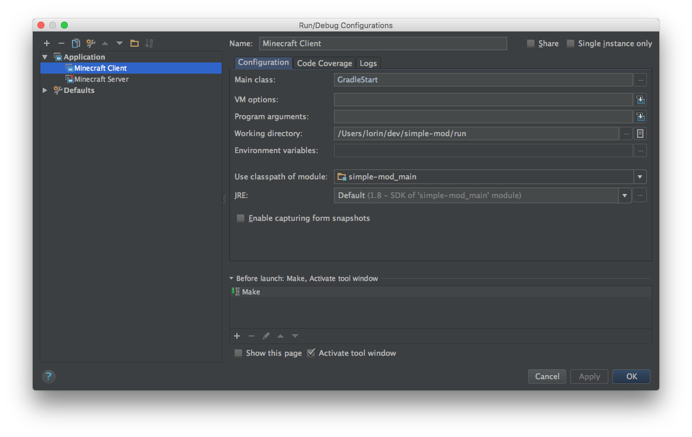
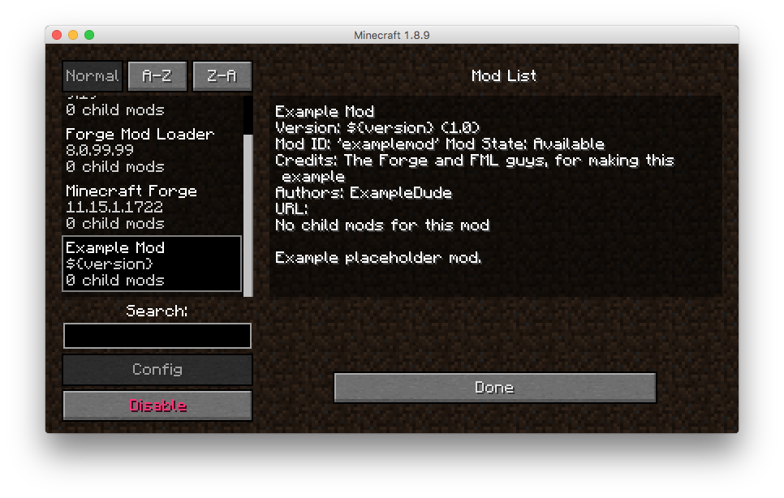

Creating a new project
This assumes:
- Minecraft is installed
- Running on OS X
- IntelliJ is installed
I'm going to use ~/dev/simple-mod as the location for the mod files, and
simplemod as the name of the mod, in the org.lorinhochstein.simplemod group.
Download the Mod Development Kit
-
Go to http://files.minecraftforge.net/ and in the "Download Recommended" box, click the disk image labeled "Mdk".
-
You'll likely get some horrible popup asking you to to download a new media player or somesuch. Cancel that download.
-
Click the red SKIP button in the top right-hand corner.
-
Download the file, should be named something like forge-1.8.9-11.15.1.1722-mdk.zip
Create a git repo, unzip the files and commit it
mkdir ~/dev/simple-mod
cd ~/dev/simple-mod
unzip ~/Downloads/forge-1.8.9-11.15.1.1722-mdk.zip
git init
echo classes >> .gitignore
git add .
git commit -m 'initial commit'
Modify build.gradle
Here are the changes I made:
diff --git a/build.gradle b/build.gradle
index 8b83723..382a6bb 100644
--- a/build.gradle
+++ b/build.gradle
@@ -21,8 +21,8 @@ plugins {
}
*/
version = "1.0"
-group= "com.yourname.modid" // http://maven.apache.org/guides/mini/guide-naming-conventions.html
-archivesBaseName = "modid"
+group= "org.lorinhochstein.simplemod" // http://maven.apache.org/guides/mini/guide-naming-conventions.html
+archivesBaseName = "simplemod"
minecraft {
version = "1.8.9-11.15.1.1722"
Download artifacts needed for decompiling and building
./gradlew setupDecompWorkspace
Open the project in IntelliJ IDEA
idea .
- Brings up the "Import Project from Gradle" dialog.
- Click "OK" at bottom-right.
Create run configuration
Exit IntelliJ IDEA, then do:
./gradlew genIntellijRuns
Configure run configuration
- Launch IntelliJ IDEA loaded with the project
- In the "Run configurations" dropdown at the top-right of IDEA, cilck on the down arrow and choose "Edit Configurations..."
- Choose "Minecraft Client" in the left-hand pane
- For "Use classpath of module", click the dropdown and choose "simple-mod_main"

Once this is done:
- Click "OK" to dismiss the dialog
- Run the "Minecraft Client" configuration.
This should load Minecraft.
Verify the mod loaded properly
- Click the "Mods" button in the Minecraft dialog.
- Choose "Example Mod" in the scroller on the right
Dialog should look like:

Customize the metadata
See also official docs on FML mod information file.
Edt src/main/resources/mcmod.info. Mine looks like:
diff --git a/src/main/resources/mcmod.info b/src/main/resources/mcmod.info
index f480667..53350db 100644
--- a/src/main/resources/mcmod.info
+++ b/src/main/resources/mcmod.info
@@ -1,14 +1,14 @@
[
{
- "modid": "examplemod",
- "name": "Example Mod",
- "description": "Example placeholder mod.",
- "version": "${version}",
- "mcversion": "${mcversion}",
+ "modid": "simplemod",
+ "name": "Simple Mod",
+ "description": "A simple mod example",
+ "version": "1.0",
+ "mcversion": "1.8.9",
"url": "",
"updateUrl": "",
- "authorList": ["ExampleDude"],
- "credits": "The Forge and FML guys, for making this example",
+ "authorList": ["Lorin Hochstein"],
+ "credits": "",
"logoFile": "",
"screenshots": [],
"dependencies": []
Create Java package and file
We need an org.lorinhochstein.simplemod.SimpleMod Java class.
- View > Tool Windows > Project
- Expand simple-mod > src > main > java
- Right-click on java
- New > Package
- Type
org.lorinhochstein.simplemodand click OK - Right-click on org.lorinhochstein.simplemod
- New > Java Class
- Type
SimpleModand click OK - Write an initial no-op implementation:
package org.lorinhochstein.simplemod;
import net.minecraftforge.fml.common.Mod;
import net.minecraftforge.fml.common.event.FMLInitializationEvent;
@Mod(modid = SimpleMod.MODID, version = SimpleMod.VERSION)
public class SimpleMod {
public static final String MODID = "simplemod";
public static final String VERSION = "1.0";
@Mod.EventHandler
public void init(FMLInitializationEvent event)
{
// nothing here yet
}
}
Delete ExampleMod.java
Delete src/main/java/com/example/examplemod/ExampleMod.java. Easiest is to
click on it in IDEA and hit the "delete" key.